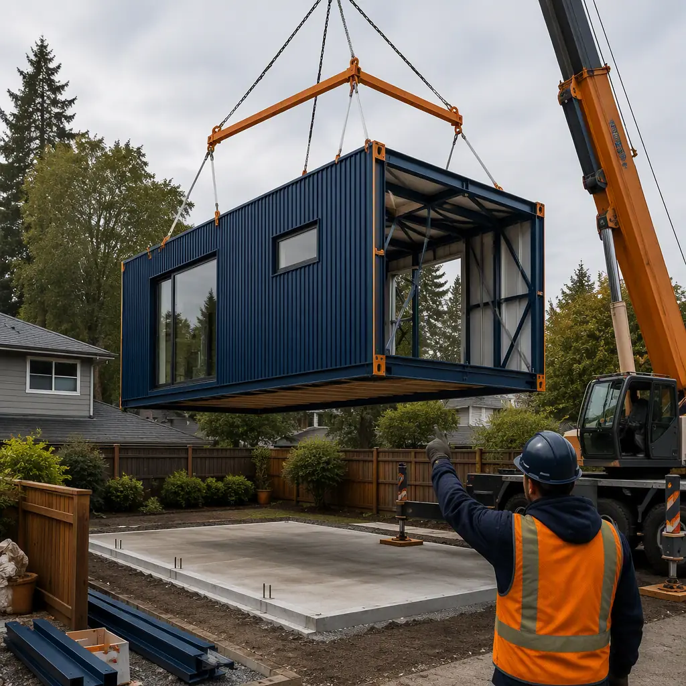
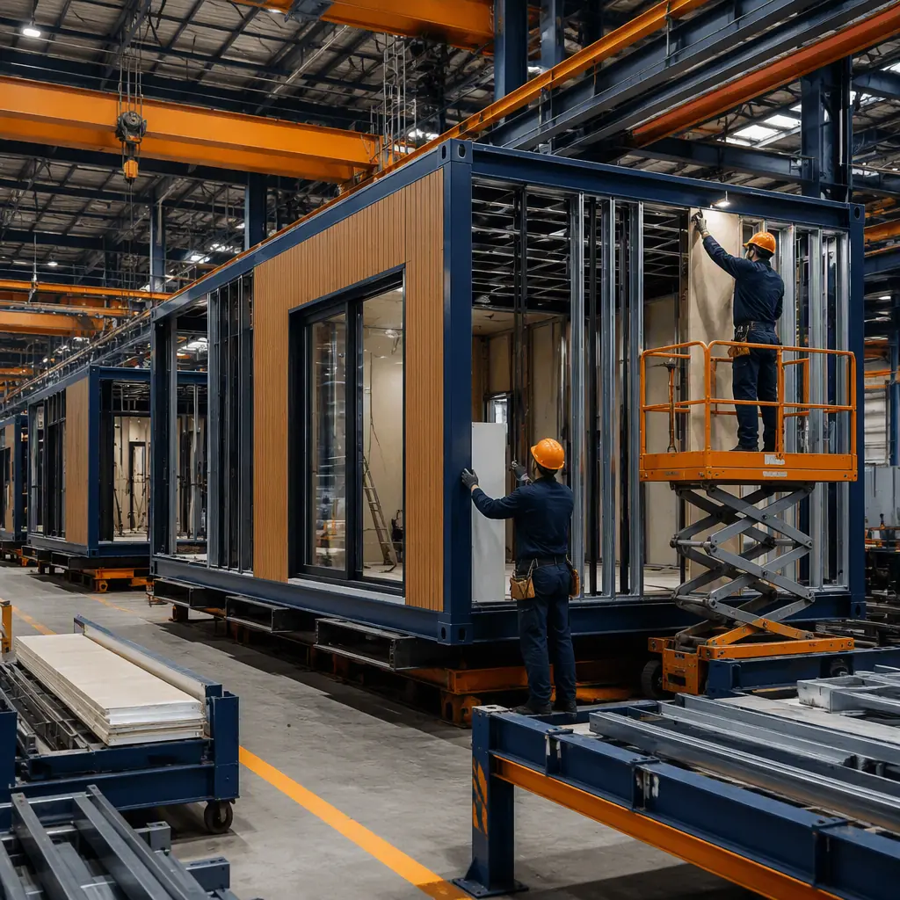
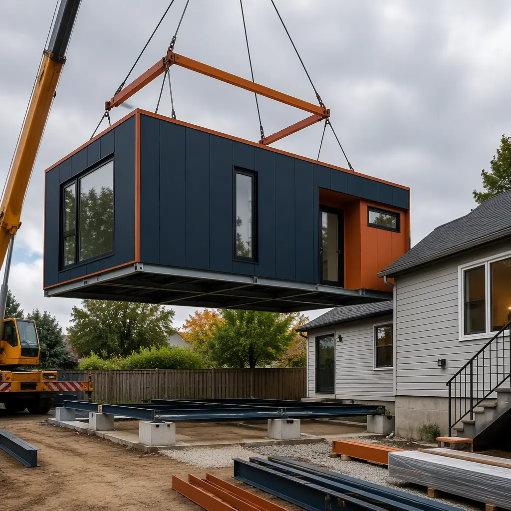
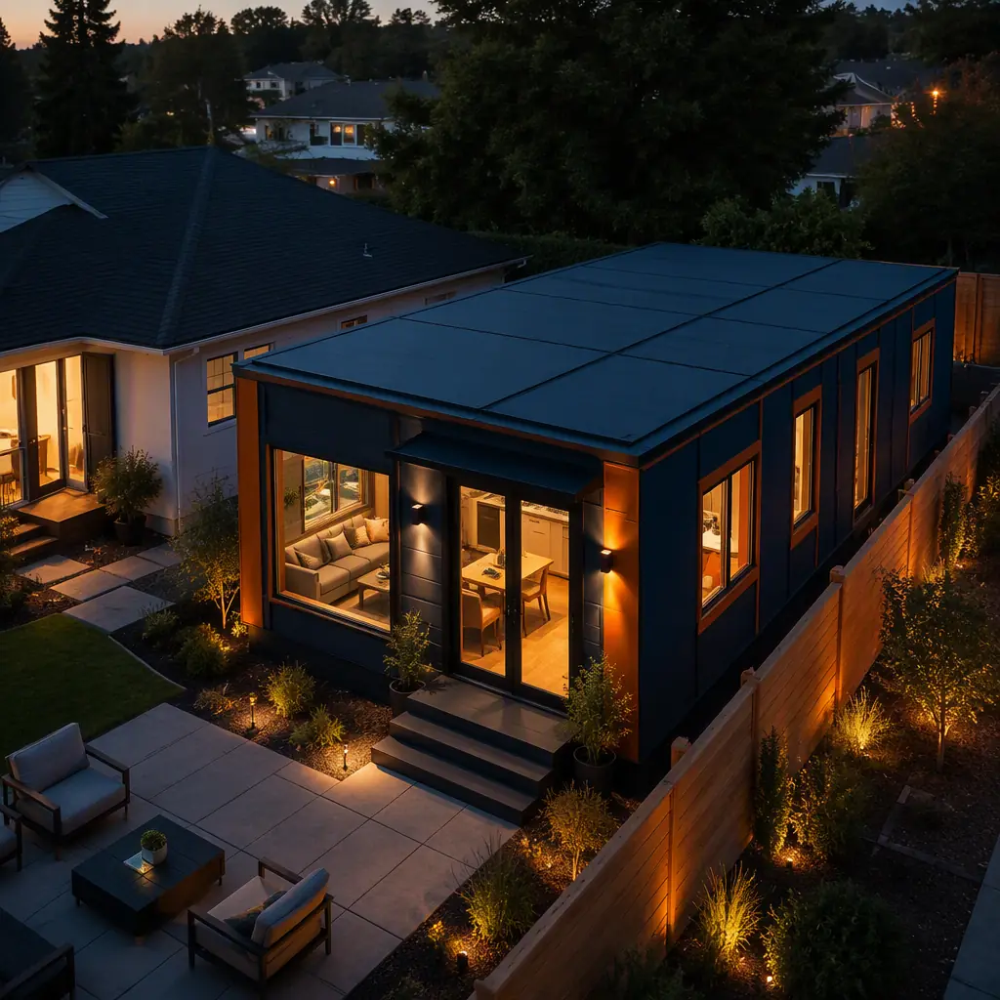

Accessory dwelling units have become the fastest-growing housing type in the United States — and modular is the delivery method that finally makes them economical. An ADU is a complete secondary home on an existing single-family lot: typically 400–1,200 sq ft, with its own entrance, kitchen, bathroom, and living space. California alone went from roughly 1,000 ADU permits per year in 2016 to more than 25,000 per year since statewide laws removed most local barriers, and dozens of other states have followed with pre-approved plan programs. The construction economics explain the shift. A factory-built steel-frame ADU module is delivered and installed in 12–16 weeks at $180–260 per sq ft all-in — against 8–14 months and $280–450 per sq ft for a comparable site-built unit — while meeting the same IRC building code, verified by factory inspection rather than months of field trades. This guide covers the modular ADU process, real cost benchmarks, zoning rules, financing options, and the design choices that separate a profitable rental unit from a money pit.

Why Accessory Dwelling Units Are the Fastest-Growing Housing Type in America
The United States faces a structural housing shortage estimated at 1.5–5.5 million units depending on the forecast, and ADUs are one of the few housing types that can be added to existing neighborhoods without rezoning, new infrastructure, or large land assembly. Municipalities discovered that legalizing ADUs unlocks infill housing at a fraction of the cost of new subdivisions. The results are measurable: California cities permitted more than 25,000 ADUs in 2024 alone, and jurisdictions with pre-approved plan programs report permit-to-completion times of 12–18 months for site-built units and 4–6 months for modular units.
- Rental income with a 20-year horizon. A one-bedroom ADU rents for $1,500–2,500 per month in most metro markets — enough to cover a $300,000–400,000 construction cost within 10–15 years while adding to property value.
- Multigenerational housing. Roughly 1 in 4 American adults now lives in a multigenerational household; an ADU provides independent living space for aging parents or adult children without the cost of a second property.
- Infill without new infrastructure. ADUs use existing water, sewer, power, and street capacity — the utility connection is a tap, not a trunk-line extension. The economics are covered in our building additions and expansions guide.
- Policy tailwinds. California's AB 68 and AB 3182 removed owner-occupancy requirements and parking mandates, and HUD-backed financing now treats ADUs as appraisable assets — the policy landscape is mapped in our permitting and zoning guide.
For property owners the decision is rarely whether to add an ADU, but how For a deeper look, our modular apartment buildings cost guide covers the details. to build one without a year of construction noise, cost overruns, and permit delays — which is exactly the problem modular delivery was designed to solve.
Modular ADU vs Site-Built vs Garage Conversion
There are three practical ways to add a secondary dwelling to an existing lot, and they are not interchangeable. The comparison below reflects 2026 market data for a typical 750 sq ft one-bedroom unit in a mid-cost metro area:
| Metric (750 sq ft unit) | Modular ADU | Site-Built ADU | Garage Conversion |
|---|---|---|---|
| Timeline to occupancy | 12–16 weeks | 8–14 months | 6–10 months |
| All-in cost per sq ft | $180–260 | $280–450 | $120–200 (if garage exists) |
| Quality consistency | Factory-inspected, documented | Varies with local crews | Constrained by existing structure |
| Energy performance | Engineered envelope, air-tested | Depends on field quality | Limited by existing shell |
| Financing eligibility | Appraisable new construction | Appraisable new construction | Conversion appraisal rules vary |
| Warranty | Factory-backed, structural | Contractor-backed, limited | As-is, no structural warranty |
The garage conversion appears cheaper per square foot only because the shell already exists — but it inherits the garage's slab, undersized framing, and poor insulation, and it permanently removes parking. A modular ADU is purpose-engineered as a dwelling from the first drawing, which is why the per-square-foot cost comparison in our cost per square foot guide consistently shows factory-built units winning on total cost of ownership.
How a Modular ADU Is Built: From Permit to Move-In
The modular ADU delivery sequence compresses the critical path by running design, fabrication, and site work in parallel. A typical schedule looks like this:
| Phase | Duration | What Happens |
|---|---|---|
| Site assessment and design | 2–4 weeks | Survey, utility locates, module layout, plan selection |
| Permit application | 3–8 weeks (parallel) | ADU zoning clearance, building permit, utility permits |
| Factory fabrication | 6–8 weeks (parallel) | Steel frame, envelope, MEP, finishes assembled indoors |
| Foundation and site work | 2–4 weeks (parallel) | Concrete piers or slab, utility stubs to module footprint |
| Delivery and crane install | 1–2 days | Module transported and craned onto foundation |
| Hookups and final inspection | 2–4 weeks | Utility connections, module joints sealed, certificate of occupancy |
| Move-in ready | 12–16 weeks total | vs 8–14 months site-built |

The 12–16 week number holds because factory fabrication and site work overlap completely. While the module is being assembled indoors — protected from weather and inspected at every station — the foundation is poured, utility stubs are placed, and the permit is finalized. The schedule mechanics are the same ones our project timeline analysis documents for commercial projects, applied at residential scale. Delivery logistics — module transport dimensions, crane reach, and street clearance — are assessed during site selection using the process in our transportation and logistics guide.
What a Modular ADU Actually Costs
ADU budgets fail when owners discover the line items beyond the module itself. A realistic all-in budget for a 750 sq ft modular ADU in 2026 breaks down as follows:
- Factory module (installed). $120–180 per sq ft, delivered and craned — the largest line item, covering structure, envelope, MEP, and finishes.
- Foundation and site work. $15,000–25,000 — pier-and-beam or slab, grading, and utility trenching to the module footprint.
- Utility connections. $10,000–20,000 — water tap, sewer connection, and electrical service upgrade (a 200 A panel upgrade alone is often $3,000–6,000).
- Permits and plan review. $5,000–15,000 depending on jurisdiction — many cities now discount or expedite ADU permits.
- Contingency. 5–10% — site surprises (soils, utility conflicts) are the only genuinely unpredictable cost.
Summed, the all-in figure lands at $180–260 per sq ft — roughly $135,000–195,000 for a 750 sq ft unit — against $210,000–340,000 for site-built. Financing options have widened considerably: cash-out refinancing and home equity lines remain the most common, but Fannie Mae and Freddie Mac now support ADU appraisals, several states run grant programs (California's program has provided up to $40,000 per unit), and construction-to-permanent loans cover the factory build. Our construction financing guide maps which structures fit residential owners versus investor-developers.

Zoning, Permits, and ADU Regulations
ADU law is state-driven and owner-friendly, but local detail still decides what you can build. The pattern across leading states: owner-occupancy requirements removed, parking mandates waived within transit areas, minimum lot sizes eliminated, and ministerial approval (no discretionary hearing) required for compliant proposals. Typical rules to check in your jurisdiction:
- Size limits. Most states cap ADUs at 1,200 sq ft (California) or 800–1,000 sq ft, with separate limits for attached, detached, and conversion types.
- Setbacks and height. Rear and side yard setbacks are often reduced or waived for ADUs; height limits usually track the primary dwelling.
- Design standards. Many cities require matching exterior materials or specific roof forms — factory-built modules accommodate these as cladding and trim options.
- HOA and utility rules. Covenants and private utility districts can impose their own requirements on top of municipal zoning.
Modular delivery does not change the zoning question, but it changes the permit experience: the module is engineered to a national standard (IRC with state amendments), and factory inspection records support the final inspection rather than replacing it. Our permitting and zoning guide walks through how factory inspection integrates with local approval, and our design customization guide shows how exterior treatments are adapted to local design review.
Design Options for Modular ADUs
ADU manufacturers maintain plan catalogs of standard designs — studio, one-bedroom, and two-bedroom layouts from 400 to 1,200 sq ft — engineered once and produced repeatedly. That standardization is what makes the 12–16 week schedule and fixed pricing possible. Within a standard plan, owners choose:
- Detached versus attached. Detached units are the most common; attached units share a wall with the primary home and can be cheaper per sq ft.
- Configuration. Single-story units, garage-top units over an existing or new garage, and two-story units on constrained lots.
- Finishes and equipment. Kitchen cabinetry level, flooring, HVAC type (ductless mini-split is standard in most modular ADUs), and solar-ready roofs — the same customization levers our luxury modular homes guide describes at the high end.
For owners planning multiple units or a rental portfolio, the repeatability compounds: the second and third ADUs reuse the same engineered plan, the same factory tooling, and the same permit package — the portfolio economics are covered in our apartments developer guide.
The Investment Case for a Modular ADU
Run the numbers on a 750 sq ft one-bedroom modular ADU at $165,000 all-in: at a $1,800 per month market rent, gross yield is roughly 13% before vacancy, maintenance, and property management; after a 30% expense ratio, net yield sits near 9%, paying the construction cost back in 9–12 years while the building appreciates with the property. Compared with a site-built unit, the modular ADU reaches rent-ready status 6–10 months sooner — worth $10,800–18,000 in earlier rental income on the example above — and carries a factory-backed structural warranty instead of a contractor handshake. The full return analysis, including resale uplift and tax treatment, is in our developer ROI guide.
An ADU is the only housing type where the owner can see the entire project — cost, schedule, and code compliance — before breaking ground. Modular delivery makes that transparency contractual: a fixed factory price, a production slot, and an inspection record for every assembly. Homeowners stop managing construction and start managing a rental asset: the building arrives on a truck, is craned into place in a day, and is producing income within the quarter.
Planning Your Modular ADU: A 6-Step Checklist
- Confirm ADU eligibility first. Check lot size, zoning district, and utility capacity before spending on design — most cities publish an ADU pre-check tool.
- Size the unit to the market. Rent surveys in your zip code determine whether a studio or two-bedroom layout maximizes yield; the unit's income, not the square footage, sets the budget.
- Select a manufacturer early. Engage the factory during site assessment so module dimensions, delivery corridors, and crane access shape the layout — not the other way around.
- Lock financing before ordering. Construction financing draws follow factory milestones (design release, steel fabrication, module completion), so the draw schedule must match production — our payment draw schedule guide shows the mechanics.
- Budget the hookup, not just the module. Utility connections and panel upgrades are the most underestimated line items in ADU budgets; get a written utility quote during design.
- Plan the install day. The crane lift is a one-day event — confirm crane access, street permits, and utility shutdowns with the city and the manufacturer's logistics team.
Homeowners, real estate investors, and developers evaluating modular ADUs should also review our modular vs container construction comparison — container-based ADUs are a frequent alternative that rarely matches the steel-frame module on cost per sq ft — and our quality comparison analysis for the factory-versus-field evidence.
